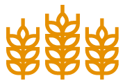
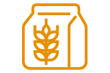

Database
データを見る

系統を探す
コムギの系統を種別にまとめられたリストから検索ができます。
cDNAを探す
系統や組織ごとにまとめられたcDNAの情報を見ることができます。(DNAクローンの配布は現在停止しております。)

ダウンロード
系統、cDNA、Genomeなどのダウンロードできるデータを用意しています。

Project Overview プロジェクトについて
KOMUGIについて
"KOMUGI"はコムギの統合データベースで、1996年にコムギ（Triticumと関連種Aegilops）の遺伝資源に関心の深い日本の研究者有志によって作成されました。
KOMUGIの「系統」には木原均博士と氏の同僚が原産地へ遠征して収集したTriticumやAegilopsをはじめ、世界中の科学者によって作出された実験系統やライムギ・エンバクなどの情報が入っています。またゲノム関連情報として遺伝子記号のカタログ情報、ESTクローンおよび遺伝子配列情報なども取り込みました。
現在KOMUGIは、2002年に発足した文部科学省：ナショナルバイオリソースプロジェクトにおけるコムギ委員会によって管理されています。
コムギ委員会 は、13機関20人の メンバー によって構成されています。委員会活動を通じて、登録系統を整理し、新たな知識情報（系統の染色体構成や表現型（特にイメージデータ）、ゲノム関連情報など）を付加し、"KOMUGI"をより充実したデータベースにしていくつもりです。
NBRP・コムギは高品質な研究リソースを収集・保存・配布します
2002年発足した文部科学省のナショナルバイオリソースプロジェクト（NBRP:National BioResource Project）の対象生物種としてコムギが採択されて以来、 コムギとその近縁種の種子リソース、DNAリソースの収集・保存・配布を継続してきました。第3期NBRP・コムギの業務はこれまでと同様に、京都大学農学研究科を中核機関、 横浜市立大学木原生物学研究所をサブ機関として実施しています。コムギ研究者並びに関連する専門家で構成する運営委員会が事業の順調な遂行をサポートしています。 また、日本のコムギ研究者グループであるコムギ小委員会からのリソースの整備に関する要望、提言が、運営委員会や事業実施者に直接届く体制が整えられています。
第3期NBRP・コムギは、第2期までに収集・保存したコムギとその近縁種の野生種、在来系統および実験系統について保存と配布を継続する他、長期保存体制の確立、 実験系統群の委託システムの確立を行います。新たな有用な実験系統は随時収集・保存していきます。また、同じく第2期までに整備したDNAクローンの保存と配布を継続し、 近年蓄積されつつあるコムギのゲノム情報の整理と発信を目指します。これらのコムギリソースは、コムギリソースのデータベースであるKOMUGIを通じて入手できます。 さらに、第3期NBRP・コムギでは「高度の情報と信頼性を具備したコムギ遺伝資源の整備」を目標に掲げ、所蔵系統に表現型データと遺伝子型データを付与することを進め、 利用者の使いやすいコムギ遺伝資源を提供できるよう事業を進めます。
Distribution / Deposition / Publication
リソースの活用とお願い

分譲方法について
リソースの分譲については、各研究機関にご依頼ください。

寄託のお願い
研究に用いられた系統を寄託していただければ、大切に保存・管理いたします。
論文登録のお願い
リソースを利用して成果があがりましたら、成果論文の登録をお願いいたします。